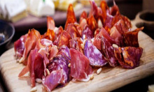

Hòn Béo Cò hoang sơ giữa vịnh Bái Tử Long
Hòn Béo Cò là một trong khoảng 600 hòn đảo thuộc huyện đảo Vân Đồn, cảnh quan kỳ vĩ với vách đá dựng đứng và một bãi cát đẹp, xung quanh là hệ thống bè nổi nuôi hàu của ngư dân. Chu Đức Việt, sinh năm 1987, đến từ Hà Nội, vừa có chuyến du lịch đáng nhớ trên hòn đảo nhỏ giữa vịnh Bái Tử Long.
Thông qua các kênh khác nhau, nhóm liên hệ ngư dân địa phương nên được hỗ trợ chu đáo trong chuyến đi. Hành trình từ cảng Cái Rồng đến hòn Béo Cò mất khoảng 15-25 phút đi thuyền.
Trên hành trình, Việt bất ngờ với những hòn đảo muôn hình dạng kỳ thú, nhấp nhô trên mặt trước xanh màu ngọc bích.
Nhóm của Đức Việt có 14 người, lựa chọn đi Béo Cò trễ hơn so với dịp lễ 30/4 để tránh đông đúc và thuận tiện di chuyển. Họ khởi hành vào sáng ngày 2/5, cắm trại một đêm và về chiều ngày 3/5.
Hòn Béo Cò chưa du lịch hóa, trên đảo có vài hộ dân sinh sống, du khách đến đây chủ yếu là những người đam mê cắm trại, yêu thích khám phá biển đảo.
Bãi cát ven vách đá Béo Cò được che chắn gió biển nên lý tưởng để cắm trại. Một lưu ý khi du lịch cắm trại tại đảo Béo Cò là cần tìm hiểu về vị trí, địa lý nơi đây để không gặp sự cố lúc thuỷ triều lên. Nhóm của Việt tới hòn lúc 12h, khi nước biển cách vách đá khoảng 12 m. Đến khi thuỷ triều lên, bãi cát thu hẹp lại chỉ còn khoảng 7m, khoảng trống vừa đủ để cắm trại ban đêm. Từ đêm đến sáng thì thuỷ triều rút, lộ diện bãi cát trải dài đến 20-30 m.
Hòn đảo còn hoang sơ nên nhóm phải chuẩn bị tất cả dụng cụ cắm trại cần thiết như lều, bếp và dụng cụ cá nhân... Anh Đức Việt lưu ý du khách cần dọn dẹp sạch rác thải, giữ gìn vệ sinh môi trường khi cắm trại. Trở ngại nhỏ anh gặp phải là bị dĩn (bọ mát) đốt chân tay, do sơ suất không đem thuốc bôi chống côn trùng.
Đón bình minh trên đảo, một khoảnh khắc đáng nhớ trong chuyến đi hai ngày một đêm trên đảo Béo Cò. Anh Đức Việt chia sẻ: "Tuổi trẻ sống bằng trải nghiệm. Về già sống bằng kỷ niệm. Việt Nam mình có rất nhiều điểm đến, biển đảo xinh đẹp, hãy khám phá ngay khi còn trẻ và điều kiện cho phép. Đó là lý do tôi tiếp tục các chuyến chu du, cắm trại trong năm nay". Trước đó, năm 2021, anh Việt phượt từ Hà Nội đến Cà Mau bằng xe máy trong 25 ngày, qua 34 tỉnh.
Nguồn: https://vnexpress.net/
-
Tăng tàu đến các điểm du lịch
Từ tháng 5, ngành đường sắt tổ chức chạy thêm nhiều tàu Hà Nội - Đồng Hới, TP HCM - Đà Nẵng/Nha Trang phục vụ khách du lịch.
-

Điểm mới tại Lễ hội Du lịch Hà Nội 2022
Gian hàng triển lãm online lần đầu tiên xuất hiện tại lễ hội trên nền tảng 2D, gồm các hoạt động tổ chức sự kiện, hội thảo, quảng bá, thương mại hóa… -

Casa Espana - điểm thưởng thức ẩm thực Tây Ban Nha tại Hà Nội
Casa Espana là một trong những nhà hàng gây ấn tượng thực khách tại Hà Nội nhờ có kiến trúc cổ điển và các món ăn truyền thống Tây Ban Nha. -

9 trải nghiệm ở Sa Pa được người nước ngoài gợi ý
Với tầm nhìn xuống những thung lũng sâu, đèo Ô Quy Hồ (cổng trời Trạm Tôn) là địa điểm được gợi ý cho khách Tây muốn đi phượt. -

Hòn Béo Cò hoang sơ giữa vịnh Bái Tử Long
Hòn Béo Cò là một trong khoảng 600 hòn đảo thuộc huyện đảo Vân Đồn, cảnh quan kỳ vĩ với vách đá dựng đứng và một bãi cát đẹp, xung quanh là hệ thống bè nổi nuôi hàu của ngư dân. Chu Đức Việt, sinh năm 1987, đến từ Hà Nội, vừa có chuyến du lịch đáng nhớ trên hòn đảo nhỏ giữa vịnh Bái Tử Long. -
Cẩm nang du lịch Phú Thọ
Phú Thọ cách Hà Nội khoảng 90 km về phía tây bắc. Nhắc đến nơi đây, du khách thường nghĩ ngay tới Lễ hội Đền Hùng, hành hương về với cội nguồn hay rừng cọ, đồi chè bạt ngàn. -

Du lịch Đà Nẵng vui quên lối về trọn bộ cẩm nang A-Z
Nhắc đến Đà Nẵng nhiều người sẽ thường nghĩ ngay đến “thành phố đáng sống nhất Việt Nam” nhờ cảnh sắc, khí hậu ôn hòa, rất thích hợp để nghỉ dưỡng.